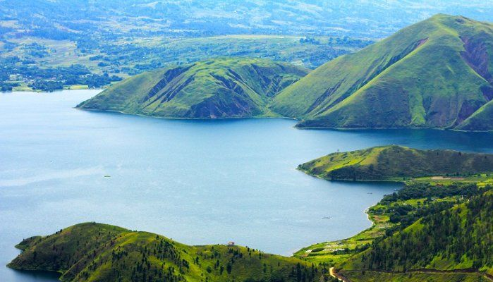
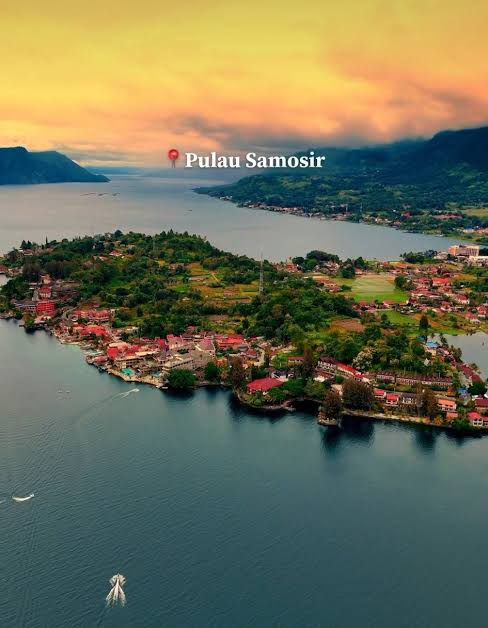
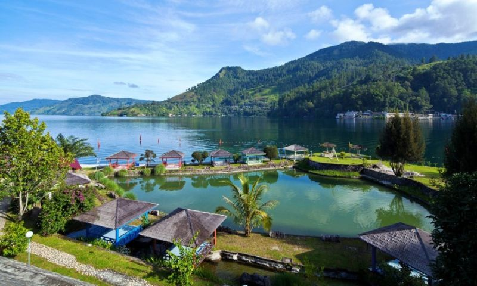

Keindahan wisata alam Sumatera Utara.
Danau Toba merupakan salah satu destinasi wisata terkenal di Sumatera Utara. Danau ini memiliki pemandangan alam yang indah.
Di tengah Danau Toba terdapat Pulau Samosir yang menjadi salah satu tujuan wisata favorit. Pengunjung dapat menikmati budaya Batak dan berbagai kuliner tradisional.



Danau Toba merupakan destinasi wisata yang menawarkan keindahan alam dan kekayaan budaya yang menarik untuk dikunjungi.